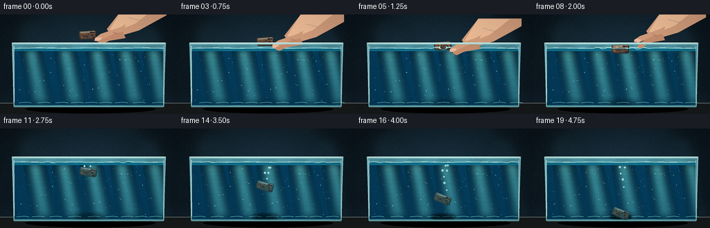
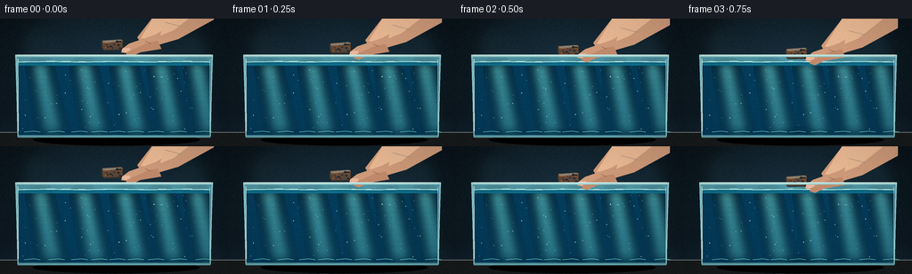

CODING AGENTS AS PIXEL WORLD MODELS
traex/GPT-5.6-Sol · phygen_006
点击播放 · 原生 RGB 像素
逐轮保存的候选
回放视频、检查图与代码变化。
每份候选均可单独播放。实际图片检查记录在下方工具轨迹中。
候选 01播放与检查图
点击播放 · 原生 RGB 像素


展开代码变化
--- 上一保存版本
+++ 本次保存版本
@@ -0,0 +1,260 @@
+from pathlib import Path
+import math
+import numpy as np
+from PIL import Image, ImageDraw, ImageFilter
+import artifact_io
+
+# Procedural 2-D cinematic rendering. All randomness is seeded and temporally coherent.
+W, H, N = 256, 144, 20
+S = 4
+WW, HH = W*S, H*S
+rng = np.random.default_rng(6106)
+
+# Static film grain and water motes (fixed world positions prevent flicker).
+grain = rng.normal(0, 1.55, (H, W, 1))
+motes = [(float(rng.uniform(24,232)), float(rng.uniform(54,126)), float(rng.uniform(.25,1.0))) for _ in range(70)]
+rust_spots = [(rng.uniform(-10,10), rng.uniform(-4.5,4.5), rng.uniform(.6,2.0), rng.choice([-1,1])) for _ in range(20)]
+bubbles = []
+for birth in range(8,16):
+ for _ in range(2 if birth < 13 else 1):
+ bubbles.append((birth, rng.uniform(-7,7), rng.uniform(.8,2.0), rng.uniform(-.55,.55)))
+
+def sc(v): return int(round(v*S))
+def pts(seq): return [(sc(x),sc(y)) for x,y in seq]
+def line(draw, seq, fill, width=1): draw.line(pts(seq), fill=fill, width=max(1,sc(width)), joint='curve')
+def ellipse(draw, box, fill=None, outline=None, width=1):
+ draw.ellipse(tuple(sc(v) for v in box), fill=fill, outline=outline, width=max(1,sc(width)))
+def polygon(draw, seq, fill): draw.polygon(pts(seq), fill=fill)
+
+def object_state(i):
+ # A deliberate lowering, a short surface pause, then gravitational acceleration.
+ if i <= 5:
+ y = 29.5 + 3.15*i
+ elif i <= 7:
+ y = 46.0 + .45*(i-5) # gently supported at the surface
+ else:
+ q = i-7
+ y = 47.0 + 2.2*q + .43*q*q
+ y = min(y, 122.8)
+ x = 127 + (0 if i < 8 else 0.6*math.sin((i-8)*.7))
+ angle = -4 + (0 if i <= 7 else min(26, (i-7)*2.7))
+ if i >= 17: angle = 25 - (i-17)*2.0
+ return x,y,angle
+
+def rotate_point(x,y,cx,cy,a):
+ c,s=math.cos(a),math.sin(a)
+ return cx+x*c-y*s, cy+x*s+y*c
+
+def draw_iron(base, cx, cy, deg, underwater):
+ """Rust-pitted iron bar with bevels and a visible side plane."""
+ a=math.radians(deg)
+ d=Image.new('RGBA',(WW,HH),(0,0,0,0)); q=ImageDraw.Draw(d,'RGBA')
+ # shadow directly beneath the bar gives it volume
+ poly=[rotate_point(x,y,cx,cy,a) for x,y in [(-12,-6),(10,-6),(12,-4),(12,5),(9,7),(-11,6),(-13,3),(-13,-4)]]
+ polygon(q,poly,(54,50,47,255) if not underwater else (45,58,59,255))
+ # main oxidized face
+ face=[rotate_point(x,y,cx,cy,a) for x,y in [(-11.5,-5.5),(9,-5.5),(11,-3.7),(10.5,3.8),(8,5.4),(-10.5,4.7),(-12,2.7),(-12,-3.8)]]
+ polygon(q,face,(91,72,59,255) if not underwater else (60,75,72,255))
+ # upper bevel catches the cool studio light
+ bevel=[rotate_point(x,y,cx,cy,a) for x,y in [(-11.5,-5.5),(9,-5.5),(11,-3.7),(-10.8,-2.6)]]
+ polygon(q,bevel,(151,133,112,245) if not underwater else (92,123,123,240))
+ side=[rotate_point(x,y,cx,cy,a) for x,y in [(11,-3.7),(12,-4),(12,5),(9,7),(8,5.4),(10.5,3.8)]]
+ polygon(q,side,(38,35,33,255) if not underwater else (36,52,53,255))
+ # corrosion freckles, transformed with the bar
+ for ox,oy,r,kind in rust_spots:
+ px,py=rotate_point(ox,oy,cx,cy,a)
+ col=(45,36,31,150) if kind<0 else ((176,92,40,175) if not underwater else (110,83,58,150))
+ ellipse(q,(px-r,py-r*.55,px+r,py+r*.55),fill=col)
+ p1=rotate_point(-7,-3.8,cx,cy,a); p2=rotate_point(3,-3.8,cx,cy,a)
+ line(q,[p1,p2],(221,205,173,150) if not underwater else (170,208,203,115),.7)
+ # slight submerged haze from water between viewer and object
+ if underwater:
+ tint=Image.new('RGBA',(WW,HH),(15,105,129,0))
+ mask=d.getchannel('A').point(lambda p: int(p*.16))
+ tint.putalpha(mask); d=Image.alpha_composite(d,tint)
+ base.alpha_composite(d)
+
+def draw_hand(base, i, objx, objy):
+ # Hand follows the iron until release, then withdraws upward and right.
+ if i <= 6:
+ shift_y=objy-29.5
+ shift_x=0
+ openness=0
+ alpha=255
+ else:
+ u=min(1,(i-6)/5)
+ shift_y=(46-29.5)-u*34
+ shift_x=u*25
+ openness=u*7
+ alpha=int(255*(1-max(0,u-.76)/.24)) if u>.76 else 255
+ if alpha<=0: return
+ lay=Image.new('RGBA',(WW,HH),(0,0,0,0)); d=ImageDraw.Draw(lay,'RGBA')
+ sy, sx=shift_y,shift_x
+ # soft cast shadow
+ polygon(d,[(176+sx,-8+sy),(236+sx,-8+sy),(195+sx,22+sy),(160+sx,34+sy)],(29,19,18,45))
+ # forearm and palm silhouette, entering naturally from upper right
+ skin=(210,157,124,alpha); light=(238,188,150,alpha); shade=(157,104,82,alpha)
+ polygon(d,[(178+sx,-10+sy),(240+sx,-10+sy),(240+sx,1+sy),(200+sx,23+sy),(176+sx,30+sy),(158+sx,27+sy),(154+sx,21+sy)],skin)
+ polygon(d,[(177+sx,-9+sy),(223+sx,-9+sy),(195+sx,13+sy),(170+sx,23+sy),(158+sx,22+sy)],light)
+ # index finger angled toward right upper edge of the bar
+ finger1=[(181+sx,14+sy),(174+sx,18+sy),(145+sx,28+sy),(137+sx,34+sy-openness*.25),(136+sx,38+sy-openness*.5),(143+sx,39+sy-openness*.5),(151+sx,34+sy),(178+sx,27+sy)]
+ polygon(d,finger1,skin)
+ # thumb approaches the opposite upper edge
+ finger2=[(177+sx,25+sy),(166+sx,27+sy),(153+sx,33+sy),(143+sx,37+sy+openness),(141+sx,41+sy+openness),(147+sx,43+sy+openness),(157+sx,38+sy),(181+sx,34+sy)]
+ polygon(d,finger2,(196,140,109,alpha))
+ # nails and joint creases
+ polygon(d,[(137+sx,34+sy-openness*.25),(140+sx,32.8+sy-openness*.25),(146+sx,33+sy),(146+sx,36+sy),(141+sx,38+sy-openness*.4),(137+sx,37+sy-openness*.4)],(235,185,158,alpha))
+ line(d,[(163+sx,25+sy),(169+sx,28+sy)],(136,85,70,max(0,alpha-75)),.6)
+ line(d,[(185+sx,4+sy),(204+sx,9+sy)],(255,218,183,max(0,alpha-100)),.8)
+ # anti-aliased naturally with final downsample; subtle shadow blur stays behind hand
+ base.alpha_composite(lay)
+
+def surface_y(x,i):
+ y=48.5 + .20*math.sin(x*.085 + i*.18)
+ age=i-5
+ if age>=0:
+ r=abs(x-127)
+ # two packets travel outward from the gently displaced surface
+ y += 1.9*math.exp(-age*.105)*math.exp(-((r-(3+age*8.3))/11.5)**2)*math.cos((r-age*8.3)*.35)
+ y += .6*math.exp(-age*.18)*math.exp(-(r/20)**2)*math.sin(r*.42-age)
+ return y
+
+def render(i):
+ # Matte laboratory background, brighter around the aquarium.
+ yy,xx=np.mgrid[0:HH,0:WW]
+ Y=yy/S; X=xx/S
+ radial=np.exp(-(((X-128)/135)**2+((Y-66)/95)**2))
+ arr=np.zeros((HH,WW,4),dtype=np.uint8)
+ arr[...,0]=np.clip(10+13*radial + Y*.025,0,255)
+ arr[...,1]=np.clip(18+27*radial + Y*.045,0,255)
+ arr[...,2]=np.clip(24+34*radial + Y*.065,0,255)
+ arr[...,3]=255
+ im=Image.fromarray(arr,'RGBA')
+ # out-of-focus vertical lab shapes
+ bg=Image.new('RGBA',(WW,HH),(0,0,0,0)); d=ImageDraw.Draw(bg,'RGBA')
+ polygon(d,[(0,0),(43,0),(31,113),(0,113)],(5,12,17,95))
+ polygon(d,[(205,0),(256,0),(256,115),(225,115)],(4,11,16,100))
+ ellipse(d,(32,11,78,57),fill=(52,87,95,16)); ellipse(d,(186,18,228,74),fill=(46,91,102,15))
+ bg=bg.filter(ImageFilter.GaussianBlur(sc(8))); im=Image.alpha_composite(im,bg)
+ d=ImageDraw.Draw(im,'RGBA')
+ # bench and reflection
+ polygon(d,[(0,128),(256,128),(256,144),(0,144)],(24,27,28,255))
+ line(d,[(0,128),(256,128)],(110,120,116,80),1)
+ ellipse(d,(37,130,224,143),fill=(0,0,0,90))
+
+ # aquarium back glass and water, transparent enough to retain the scene.
+ polygon(d,[(17,42),(239,42),(236,133),(20,133)],(81,150,165,15))
+ surf=[(x,surface_y(x,i)) for x in np.linspace(20,236,109)]
+ waterpoly=surf+[(236,130),(20,130)]
+ # layered water depth gradient
+ polygon(d,waterpoly,(16,112,140,150))
+ for y in range(53,130,2):
+ alpha=int(3+12*(y-53)/77)
+ polygon(d,[(20,y),(236,y),(236,y+2),(20,y+2)],(4,60,91,alpha))
+ # broad moving shafts of light underwater
+ shafts=Image.new('RGBA',(WW,HH),(0,0,0,0)); sd=ImageDraw.Draw(shafts,'RGBA')
+ for k in range(5):
+ x0=37+k*45+5*math.sin(i*.16+k)
+ polygon(sd,[(x0,49),(x0+14,49),(x0+34,130),(x0+11,130)],(105,218,218,9))
+ shafts=shafts.filter(ImageFilter.GaussianBlur(sc(6))); im=Image.alpha_composite(im,shafts); d=ImageDraw.Draw(im,'RGBA')
+ # subtle suspended particles with slow current drift
+ for mx,my,mr in motes:
+ px=20+((mx-20 + .18*i*(.3+mr))%216)
+ flick=.65+.35*math.sin(mx*.7+my+i*.12)
+ ellipse(d,(px-mr*.45,my-mr*.45,px+mr*.45,my+mr*.45),fill=(183,231,228,int(35*flick)))
+ # caustics on tank floor
+ for k in range(9):
+ x=27+k*24+5*math.sin(i*.35+k*.8)
+ line(d,[(x,127.7),(x+11,126.8),(x+18,127.7)],(116,221,215,35),.65)
+
+ ox,oy,ang=object_state(i)
+ underwater = oy > surface_y(ox,i)+2
+ # iron's soft shadow on the bottom grows sharper as it descends
+ dist=max(0,122-oy)
+ sh_alpha=int(60*(1-dist/90)) if dist<90 else 0
+ if sh_alpha>0:
+ shadow=Image.new('RGBA',(WW,HH),(0,0,0,0)); shd=ImageDraw.Draw(shadow,'RGBA')
+ ellipse(shd,(ox-15-dist*.08,125.5,ox+15+dist*.08,130),fill=(0,18,24,sh_alpha))
+ shadow=shadow.filter(ImageFilter.GaussianBlur(sc(1.2+dist*.035))); im=Image.alpha_composite(im,shadow)
+
+ # bubbles trail upward behind the sinking metal.
+ d=ImageDraw.Draw(im,'RGBA')
+ for birth,bx,br,drift in bubbles:
+ if i>=birth:
+ _,by,_=object_state(birth)
+ age=i-birth
+ px=127+bx+drift*age+.35*math.sin(age+bx)
+ py=by-1.5-age*(1.25+br*.25)
+ if py>51:
+ ellipse(d,(px-br,py-br,px+br,py+br),fill=(108,197,207,25),outline=(205,245,241,125),width=.45)
+ ellipse(d,(px-br*.38,py-br*.58,px,py-br*.18),fill=(255,255,255,110))
+
+ draw_iron(im,ox,oy,ang,underwater)
+ d=ImageDraw.Draw(im,'RGBA')
+ # tiny, low-energy droplets only at first contact
+ if 5<=i<=7:
+ age=i-5
+ for side in (-1,1):
+ dx=side*(5+age*3.3); dy=47-age*(2.8-age*.75)
+ r=max(.35,1-age*.25)
+ ellipse(d,(127+dx-r,dy-r,127+dx+r,dy+r),fill=(161,227,229,130))
+ # redraw the surface over everything: a bright refractive boundary and meniscus.
+ surf=[(x,surface_y(x,i)) for x in np.linspace(20,236,217)]
+ line(d,surf,(157,228,224,165),1.0)
+ line(d,[(22,surface_y(22,i)+1.4),(234,surface_y(234,i)+1.4)],(16,82,110,100),.45)
+ # moving broken highlights on surface
+ for k in range(10):
+ x=26+k*22+4*math.sin(i*.19+k*1.7)
+ y=surface_y(x,i)-.5
+ line(d,[(x,y),(x+7+3*math.sin(k),surface_y(x+7,i)-.5)],(227,249,238,95),.55)
+ # Surface-contact ring, seen edge-on around the bar.
+ if 5<=i<=9:
+ age=i-5; span=13+age*8
+ line(d,[(127-span,surface_y(127-span,i)-.5),(127-span*.35,surface_y(127-span*.35,i)-1.0)],(215,249,241,max(20,155-age*25)),.75)
+ line(d,[(127+span*.35,surface_y(127+span*.35,i)-1.0),(127+span,surface_y(127+span,i)-.5)],(215,249,241,max(20,155-age*25)),.75)
+
+ # Hand is in front of the rear rim and above water, making the action unmistakable.
+ draw_hand(im,i,ox,oy)
+ d=ImageDraw.Draw(im,'RGBA')
+ # tank front edges/rim and corner speculars
+ line(d,[(18,42),(20,133),(236,133),(238,42)],(149,213,215,150),1.3)
+ line(d,[(17,42),(239,42)],(207,239,232,185),1.5)
+ line(d,[(20,45),(20.5,127)],(238,255,248,90),.65)
+ line(d,[(235.5,46),(235.5,128)],(210,247,242,65),.6)
+ line(d,[(20,133),(236,133)],(102,165,171,170),2.0)
+ # top glass lip/reflection
+ polygon(d,[(17,40.5),(239,40.5),(238,43),(18,43)],(159,212,211,45))
+ line(d,[(19,41),(237,41)],(234,250,240,100),.65)
+
+ # impact on bottom: restrained rust/silt puff, after the bar settles.
+ if i>=17:
+ age=i-17
+ puff=Image.new('RGBA',(WW,HH),(0,0,0,0)); pd=ImageDraw.Draw(puff,'RGBA')
+ for k in range(12):
+ theta=(k*2.399+1.2)
+ rad=(age+1)*(2.2+(k%4)*.7)
+ px=128+math.cos(theta)*rad; py=125-math.sin(abs(theta))*rad*.25-age*.4
+ rr=1.2+age*.7+(k%3)*.3
+ ellipse(pd,(px-rr,py-rr*.45,px+rr,py+rr*.45),fill=(124,92,66,max(0,25-age*5)))
+ puff=puff.filter(ImageFilter.GaussianBlur(sc(2.0+age*.6))); im=Image.alpha_composite(im,puff)
+
+ # Optical glass veil, vignette, and fine stable grain.
+ a=np.asarray(im.convert('RGB').resize((W,H),Image.Resampling.LANCZOS)).astype(np.float32)
+ y,x=np.mgrid[0:H,0:W]
+ vig=1-.13*np.clip(((x-128)/150)**2+((y-70)/105)**2,0,1)
+ a=a*vig[...,None]+grain
+ return np.clip(a,0,255).astype(np.uint8)
+
+frames=np.stack([render(i) for i in range(N)],axis=0)
+assert frames.shape==(20,144,256,3) and frames.dtype==np.uint8
+case_dir=Path(__file__).resolve().parent
+artifact_io.save(frames,case_dir)
+
+# Also provide a conventional silent MP4 when OpenCV's local encoder is available.
+try:
+ import cv2
+ writer=cv2.VideoWriter(str(case_dir/'output.mp4'),cv2.VideoWriter_fourcc(*'mp4v'),4.0,(W,H))
+ for f in frames: writer.write(cv2.cvtColor(f,cv2.COLOR_RGB2BGR))
+ writer.release()
+except Exception:
+ pass
可观测工具轨迹
实际执行的命令与返回图片。
命令 1exit 0
/bin/bash -lc "cat prompt.txt && printf '\\n---RULES---\\n' && cat GENERATION_RULES.md && printf '\\n---SPEC---\\n' && cat task_spec.json"
命令 2exit 1
/bin/bash -lc "find . -maxdepth 2 -type f -printf '%p\\n' | sort && printf '\\n--- binaries ---\\n' && command -v ffmpeg && command -v python3 && python3 - <<'PY' for m in ['cv2','numpy','PIL','cairo','moderngl']: try: x=__import__(m); print(m,'OK',getattr(x,'__version__','')) except Exception as e: print(m,'NO',e) PY"
命令 3exit 0
/bin/bash -lc 'cat artifact_io.py'
命令 4exit 0
/bin/bash -lc "(command -v ffmpeg || true); (command -v python3 || true); python3 - <<'PY' for m in ['cv2','numpy','PIL','imageio']: try: x=__import__(m); print(m,'OK',getattr(x,'__version__','')) except Exception as e: print(m,'NO',e) PY"
命令 5exit 0
/bin/bash -lc "cat > generate.py <<'PY'
from pathlib import Path
import math
import numpy as np
from PIL import Image, ImageDraw, ImageFilter
import artifact_io
# Procedural 2-D cinematic rendering. All randomness is seeded and temporally coherent.
W, H, N = 256, 144, 20
S = 4
WW, HH = W*S, H*S
rng = np.random.default_rng(6106)
# Static film grain and water motes (fixed world positions prevent flicker).
grain = rng.normal(0, 1.55, (H, W, 1))
motes = [(float(rng.uniform(24,232)), float(rng.uniform(54,126)), float(rng.uniform(.25,1.0))) for _ in range(70)]
rust_spots = [(rng.uniform(-10,10), rng.uniform(-4.5,4.5), rng.uniform(.6,2.0), rng.choice([-1,1])) for _ in range(20)]
bubbles = []
for birth in range(8,16):
for _ in range(2 if birth < 13 else 1):
bubbles.append((birth, rng.uniform(-7,7), rng.uniform(.8,2.0), rng.uniform(-.55,.55)))
def sc(v): return int(round(v*S))
def pts(seq): return [(sc(x),sc(y)) for x,y in seq]
def line(draw, seq, fill, width=1): draw.line(pts(seq), fill=fill, width=max(1,sc(width)), joint='curve')
def ellipse(draw, box, fill=None, outline=None, width=1):
draw.ellipse(tuple(sc(v) for v in box), fill=fill, outline=outline, width=max(1,sc(width)))
def polygon(draw, seq, fill): draw.polygon(pts(seq), fill=fill)
def object_state(i):
# A deliberate lowering, a short surface pause, then gravitational acceleration.
if i <= 5:
y = 29.5 + 3.15*i
elif i <= 7:
y = 46.0 + .45*(i-5) # gently supported at the surface
else:
q = i-7
y = 47.0 + 2.2*q + .43*q*q
y = min(y, 122.8)
x = 127 + (0 if i < 8 else 0.6*math.sin((i-8)*.7))
angle = -4 + (0 if i <= 7 else min(26, (i-7)*2.7))
if i >= 17: angle = 25 - (i-17)*2.0
return x,y,angle
def rotate_point(x,y,cx,cy,a):
c,s=math.cos(a),math.sin(a)
return cx+x*c-y*s, cy+x*s+y*c
def draw_iron(base, cx, cy, deg, underwater):
\"\"\"Rust-pitted iron bar with bevels and a visible side plane.\"\"\"
a=math.radians(deg)
d=Image.new('RGBA',(WW,HH),(0,0,0,0)); q=ImageDraw.Draw(d,'RGBA')
# shadow directly beneath the bar gives it volume
poly=[rotate_point(x,y,cx,cy,a) for x,y in [(-12,-6),(10,-6),(12,-4),(12,5),(9,7),(-11,6),(-13,3),(-13,-4)]]
polygon(q,poly,(54,50,47,255) if not underwater else (45,58,59,255))
# main oxidized face
face=[rotate_point(x,y,cx,cy,a) for x,y in [(-11.5,-5.5),(9,-5.5),(11,-3.7),(10.5,3.8),(8,5.4),(-10.5,4.7),(-12,2.7),(-12,-3.8)]]
polygon(q,face,(91,72,59,255) if not underwater else (60,75,72,255))
# upper bevel catches the cool studio light
bevel=[rotate_point(x,y,cx,cy,a) for x,y in [(-11.5,-5.5),(9,-5.5),(11,-3.7),(-10.8,-2.6)]]
polygon(q,bevel,(151,133,112,245) if not underwater else (92,123,123,240))
side=[rotate_point(x,y,cx,cy,a) for x,y in [(11,-3.7),(12,-4),(12,5),(9,7),(8,5.4),(10.5,3.8)]]
polygon(q,side,(38,35,33,255) if not underwater else (36,52,53,255))
# corrosion freckles, transformed with the bar
for ox,oy,r,kind in rust_spots:
px,py=rotate_point(ox,oy,cx,cy,a)
col=(45,36,31,150) if kind<0 else ((176,92,40,175) if not underwater else (110,83,58,150))
ellipse(q,(px-r,py-r*.55,px+r,py+r*.55),fill=col)
p1=rotate_point(-7,-3.8,cx,cy,a); p2=rotate_point(3,-3.8,cx,cy,a)
line(q,[p1,p2],(221,205,173,150) if not underwater else (170,208,203,115),.7)
# slight submerged haze from water between viewer and object
if underwater:
tint=Image.new('RGBA',(WW,HH),(15,105,129,0))
mask=d.getchannel('A').point(lambda p: int(p*.16))
tint.putalpha(mask); d=Image.alpha_composite(d,tint)
base.alpha_composite(d)
def draw_hand(base, i, objx, objy):
# Hand follows the iron until release, then withdraws upward and right.
if i <= 6:
shift_y=objy-29.5
shift_x=0
openness=0
alpha=255
else:
u=min(1,(i-6)/5)
shift_y=(46-29.5)-u*34
shift_x=u*25
openness=u*7
alpha=int(255*(1-max(0,u-.76)/.24)) if u>.76 else 255
if alpha<=0: return
lay=Image.new('RGBA',(WW,HH),(0,0,0,0)); d=ImageDraw.Draw(lay,'RGBA')
sy, sx=shift_y,shift_x
# soft cast shadow
polygon(d,[(176+sx,-8+sy),(236+sx,-8+sy),(195+sx,22+sy),(160+sx,34+sy)],(29,19,18,45))
# forearm and palm silhouette, entering naturally from upper right
skin=(210,157,124,alpha); light=(238,188,150,alpha); shade=(157,104,82,alpha)
polygon(d,[(178+sx,-10+sy),(240+sx,-10+sy),(240+sx,1+sy),(200+sx,23+sy),(176+sx,30+sy),(158+sx,27+sy),(154+sx,21+sy)],skin)
polygon(d,[(177+sx,-9+sy),(223+sx,-9+sy),(195+sx,13+sy),(170+sx,23+sy),(158+sx,22+sy)],light)
# index finger angled toward right upper edge of the bar
finger1=[(181+sx,14+sy),(174+sx,18+sy),(145+sx,28+sy),(137+sx,34+sy-openness*.25),(136+sx,38+sy-openness*.5),(143+sx,39+sy-openness*.5),(151+sx,34+sy),(178+sx,27+sy)]
polygon(d,finger1,skin)
# thumb approaches the opposite upper edge
finger2=[(177+sx,25+sy),(166+sx,27+sy),(153+sx,33+sy),(143+sx,37+sy+openness),(141+sx,41+sy+openness),(147+sx,43+sy+openness),(157+sx,38+sy),(181+sx,34+sy)]
polygon(d,finger2,(196,140,109,alpha))
# nails and joint creases
polygon(d,[(137+sx,34+sy-openness*.25),(140+sx,32.8+sy-openness*.25),(146+sx,33+sy),(146+sx,36+sy),(141+sx,38+sy-openness*.4),(137+sx,37+sy-openness*.4)],(235,185,158,alpha))
line(d,[(163+sx,25+sy),(169+sx,28+sy)],(136,85,70,max(0,alpha-75)),.6)
line(d,[(185+sx,4+sy),(204+sx,9+sy)],(255,218,183,max(0,alpha-100)),.8)
# anti-aliased naturally with final downsample; subtle shadow blur stays behind hand
base.alpha_composite(lay)
def surface_y(x,i):
y=48.5 + .20*math.sin(x*.085 + i*.18)
age=i-5
if age>=0:
r=abs(x-127)
# two packets travel outward from the gently displaced surface
y += 1.9*math.exp(-age*.105)*math.exp(-((r-(3+age*8.3))/11.5)**2)*math.cos((r-age*8.3)*.35)
y += .6*math.exp(-age*.18)*math.exp(-(r/20)**2)*math.sin(r*.42-age)
return y
def render(i):
# Matte laboratory background, brighter around the aquarium.
yy,xx=np.mgrid[0:HH,0:WW]
Y=yy/S; X=xx/S
radial=np.exp(-(((X-128)/135)**2+((Y-66)/95)**2))
arr=np.zeros((HH,WW,4),dtype=np.uint8)
arr[...,0]=np.clip(10+13*radial + Y*.025,0,255)
arr[...,1]=np.clip(18+27*radial + Y*.045,0,255)
arr[...,2]=np.clip(24+34*radial + Y*.065,0,255)
arr[...,3]=255
im=Image.fromarray(arr,'RGBA')
# out-of-focus vertical lab shapes
bg=Image.new('RGBA',(WW,HH),(0,0,0,0)); d=ImageDraw.Draw(bg,'RGBA')
polygon(d,[(0,0),(43,0),(31,113),(0,113)],(5,12,17,95))
polygon(d,[(205,0),(256,0),(256,115),(225,115)],(4,11,16,100))
ellipse(d,(32,11,78,57),fill=(52,87,95,16)); ellipse(d,(186,18,228,74),fill=(46,91,102,15))
bg=bg.filter(ImageFilter.GaussianBlur(sc(8))); im=Image.alpha_composite(im,bg)
d=ImageDraw.Draw(im,'RGBA')
# bench and reflection
polygon(d,[(0,128),(256,128),(256,144),(0,144)],(24,27,28,255))
line(d,[(0,128),(256,128)],(110,120,116,80),1)
ellipse(d,(37,130,224,143),fill=(0,0,0,90))
# aquarium back glass and water, transparent enough to retain the scene.
polygon(d,[(17,42),(239,42),(236,133),(20,133)],(81,150,165,15))
surf=[(x,surface_y(x,i)) for x in np.linspace(20,236,109)]
waterpoly=surf+[(236,130),(20,130)]
# layered water depth gradient
polygon(d,waterpoly,(16,112,140,150))
for y in range(53,130,2):
alpha=int(3+12*(y-53)/77)
polygon(d,[(20,y),(236,y),(236,y+2),(20,y+2)],(4,60,91,alpha))
# broad moving shafts of light underwater
shafts=Image.new('RGBA',(WW,HH),(0,0,0,0)); sd=ImageDraw.Draw(shafts,'RGBA')
for k in range(5):
x0=37+k*45+5*math.sin(i*.16+k)
polygon(sd,[(x0,49),(x0+14,49),(x0+34,130),(x0+11,130)],(105,218,218,9))
shafts=shafts.filter(ImageFilter.GaussianBlur(sc(6))); im=Image.alpha_composite(im,shafts); d=ImageDraw.Draw(im,'RGBA')
# subtle suspended particles with slow current drift
for mx,my,mr in motes:
px=20+((mx-20 + .18*i*(.3+mr))%216)
flick=.65+.35*math.sin(mx*.7+my+i*.12)
ellipse(d,(px-mr*.45,my-mr*.45,px+mr*.45,my+mr*.45),fill=(183,231,228,int(35*flick)))
# caustics on tank floor
for k in range(9):
x=27+k*24+5*math.sin(i*.35+k*.8)
line(d,[(x,127.7),(x+11,126.8),(x+18,127.7)],(116,221,215,35),.65)
ox,oy,ang=object_state(i)
underwater = oy > surface_y(ox,i)+2
# iron's soft shadow on the bottom grows sharper as it descends
dist=max(0,122-oy)
sh_alpha=int(60*(1-dist/90)) if dist<90 else 0
if sh_alpha>0:
shadow=Image.new('RGBA',(WW,HH),(0,0,0,0)); shd=ImageDraw.Draw(shadow,'RGBA')
ellipse(shd,(ox-15-dist*.08,125.5,ox+15+dist*.08,130),fill=(0,18,24,sh_alpha))
shadow=shadow.filter(ImageFilter.GaussianBlur(sc(1.2+dist*.035))); im=Image.alpha_composite(im,shadow)
# bubbles trail upward behind the sinking metal.
d=ImageDraw.Draw(im,'RGBA')
for birth,bx,br,drift in bubbles:
if i>=birth:
_,by,_=object_state(birth)
age=i-birth
px=127+bx+drift*age+.35*math.sin(age+bx)
py=by-1.5-age*(1.25+br*.25)
if py>51:
ellipse(d,(px-br,py-br,px+br,py+br),fill=(108,197,207,25),outline=(205,245,241,125),width=.45)
ellipse(d,(px-br*.38,py-br*.58,px,py-br*.18),fill=(255,255,255,110))
draw_iron(im,ox,oy,ang,underwater)
d=ImageDraw.Draw(im,'RGBA')
# tiny, low-energy droplets only at first contact
if 5<=i<=7:
age=i-5
for side in (-1,1):
dx=side*(5+age*3.3); dy=47-age*(2.8-age*.75)
r=max(.35,1-age*.25)
ellipse(d,(127+dx-r,dy-r,127+dx+r,dy+r),fill=(161,227,229,130))
# redraw the surface over everything: a bright refractive boundary and meniscus.
surf=[(x,surface_y(x,i)) for x in np.linspace(20,236,217)]
line(d,surf,(157,228,224,165),1.0)
line(d,[(22,surface_y(22,i)+1.4),(234,surface_y(234,i)+1.4)],(16,82,110,100),.45)
# moving broken highlights on surface
for k in range(10):
x=26+k*22+4*math.sin(i*.19+k*1.7)
y=surface_y(x,i)-.5
line(d,[(x,y),(x+7+3*math.sin(k),surface_y(x+7,i)-.5)],(227,249,238,95),.55)
# Surface-contact ring, seen edge-on around the bar.
if 5<=i<=9:
age=i-5; span=13+age*8
line(d,[(127-span,surface_y(127-span,i)-.5),(127-span*.35,surface_y(127-span*.35,i)-1.0)],(215,249,241,max(20,155-age*25)),.75)
line(d,[(127+span*.35,surface_y(127+span*.35,i)-1.0),(127+span,surface_y(127+span,i)-.5)],(215,249,241,max(20,155-age*25)),.75)
# Hand is in front of the rear rim and above water, making the action unmistakable.
draw_hand(im,i,ox,oy)
d=ImageDraw.Draw(im,'RGBA')
# tank front edges/rim and corner speculars
line(d,[(18,42),(20,133),(236,133),(238,42)],(149,213,215,150),1.3)
line(d,[(17,42),(239,42)],(207,239,232,185),1.5)
line(d,[(20,45),(20.5,127)],(238,255,248,90),.65)
line(d,[(235.5,46),(235.5,128)],(210,247,242,65),.6)
line(d,[(20,133),(236,133)],(102,165,171,170),2.0)
# top glass lip/reflection
polygon(d,[(17,40.5),(239,40.5),(238,43),(18,43)],(159,212,211,45))
line(d,[(19,41),(237,41)],(234,250,240,100),.65)
# impact on bottom: restrained rust/silt puff, after the bar settles.
if i>=17:
age=i-17
puff=Image.new('RGBA',(WW,HH),(0,0,0,0)); pd=ImageDraw.Draw(puff,'RGBA')
for k in range(12):
theta=(k*2.399+1.2)
rad=(age+1)*(2.2+(k%4)*.7)
px=128+math.cos(theta)*rad; py=125-math.sin(abs(theta))*rad*.25-age*.4
rr=1.2+age*.7+(k%3)*.3
ellipse(pd,(px-rr,py-rr*.45,px+rr,py+rr*.45),fill=(124,92,66,max(0,25-age*5)))
puff=puff.filter(ImageFilter.GaussianBlur(sc(2.0+age*.6))); im=Image.alpha_composite(im,puff)
# Optical glass veil, vignette, and fine stable grain.
a=np.asarray(im.convert('RGB').resize((W,H),Image.Resampling.LANCZOS)).astype(np.float32)
y,x=np.mgrid[0:H,0:W]
vig=1-.13*np.clip(((x-128)/150)**2+((y-70)/105)**2,0,1)
a=a*vig[...,None]+grain
return np.clip(a,0,255).astype(np.uint8)
frames=np.stack([render(i) for i in range(N)],axis=0)
assert frames.shape==(20,144,256,3) and frames.dtype==np.uint8
case_dir=Path(__file__).resolve().parent
artifact_io.save(frames,case_dir)
# Also provide a conventional silent MP4 when OpenCV's local encoder is available.
try:
import cv2
writer=cv2.VideoWriter(str(case_dir/'output.mp4'),cv2.VideoWriter_fourcc(*'mp4v'),4.0,(W,H))
for f in frames: writer.write(cv2.cvtColor(f,cv2.COLOR_RGB2BGR))
writer.release()
except Exception:
pass
PY
python3 generate.py
ls -lh pixels.npz inspection.png output.mp4 frames/00.png frames/19.png"命令 6exit 0
/bin/bash -lc "python3 - <<'PY'
import numpy as np, cv2
z=np.load('pixels.npz')['pixels']
print('pixels',z.shape,z.dtype,'range',hex(int(z.min())),hex(int(z.max())))
cap=cv2.VideoCapture('output.mp4')
print('video',int(cap.get(cv2.CAP_PROP_FRAME_COUNT)),cap.get(cv2.CAP_PROP_FPS),int(cap.get(cv2.CAP_PROP_FRAME_WIDTH)),int(cap.get(cv2.CAP_PROP_FRAME_HEIGHT)))
# temporal difference; verifies animation is continuous rather than duplicated
fs=[]
for i in range(20):
f=cv2.imread(f'frames/{i:02d}.png'); fs.append(f)
print('mean abs consecutive:',[round(float(np.mean(np.abs(fs[i].astype(float)-fs[i-1]))),2) for i in range(1,20)])
print('frame means:',[round(float(np.mean(f)),1) for f in fs[::4]])
PY"保存候选 1 份；完成命令 6 次；可验证图片返回 0 张。原始 API 响应与完整日志保留在本地。